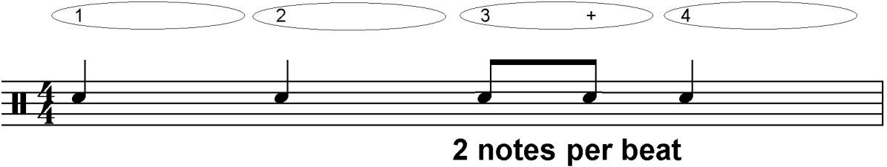
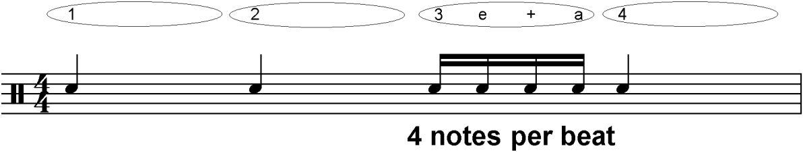
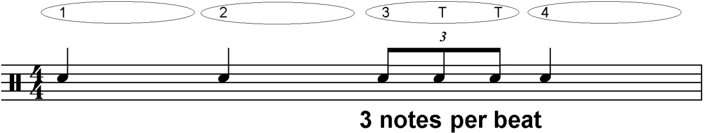
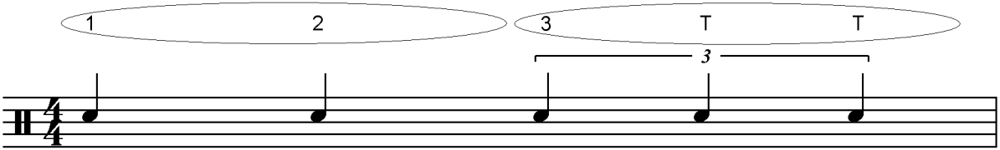
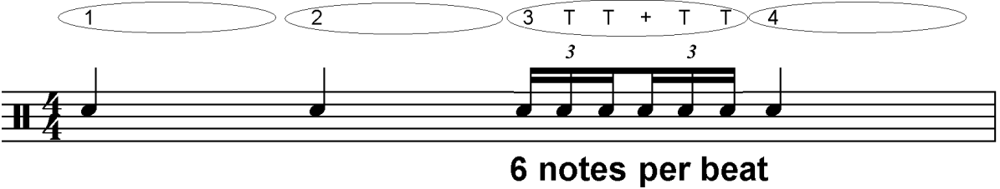

A "triplet" is a group of three notes played in the space of two. To find out how triplets work, we'll first look at a short rhythm in 4/4 time. Remember that in 4/4 time, one crotchet beat can be divided into two quavers:
We can also divide one crotchet beat into four semiquavers:
But, if we want to split the crotchet into three equal parts, we need to use a triplet. To show a triplet, we write the notes as three quavers beamed (joined) together, and we also write "3" on the beamed side of the notes. Here is a rhythm using triplets:
Triplets don't always have to be quavers - we can make triplets out of notes of any length. We can split a minim up into three equal notes by writing triplet crotchets, for example:
Crotchets don't have beams, so we write crotchet triplets with a square bracket, with the number 3 in the middle of the longest line.
We can also have triplets that are smaller than quavers. In this example, each quaver has been divided into three equal parts. This gives us semiquaver triplets:
